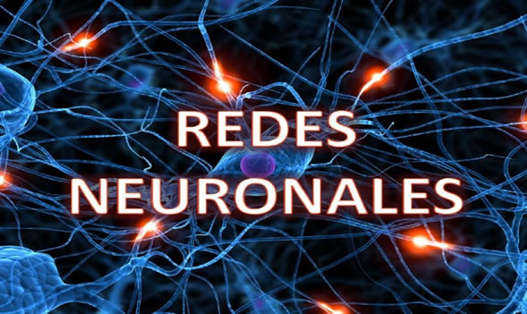
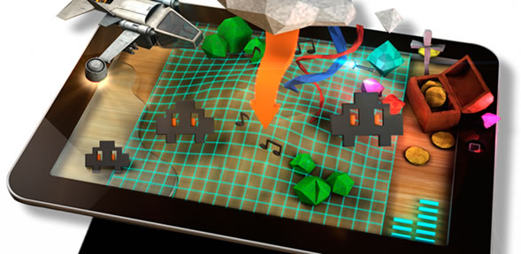
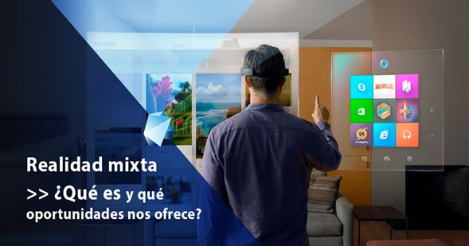

|
HTML5
HTML 5 (anteriormente deletreado HTML5 ) es un lenguaje de marcado utilizado para estructurar y presentar contenido en la World Wide Web . Es la quinta y última versión actual del estándar HTML , y subsume XHTML . Actualmente existe en dos formas estandarizadas. HTML 5.2 Recomendación del World Wide Web Consortium (W3C, una amplia coalición de organizaciones), destinada principalmente a desarrolladores de contenido web; y HTML Living Standard por WHATWG (un pequeño consorcio de cuatro proveedores de navegadores), destinado principalmente a desarrolladores de navegadores, aunque también existe en una versión abreviada de desarrollador web. Hay conflictos menores entre las especificaciones de los dos grupos.
HTML 5 se lanzó por primera vez en formato público el 22 de enero de 2008, con una actualización importante y estado de "Recomendación W3C" en octubre de 2014. Sus objetivos son mejorar el idioma con soporte para la última versión multimedia y otras características nuevas; para mantener el lenguaje fácilmente legible para los humanos y consistentemente entendido por computadoras y dispositivos tales como navegadores web , analizadores sintácticos , etc., sin la rigidez de XHTML; y también para seguir siendo compatible con versiones anteriores con software más antiguo. HTML 5 está destinado a incluir no solo HTML 4 , sino también XHTML 1 y DOM Level 2 HTML ; las especificaciones HTML 4 y XHTML se anunciaron como reemplazadas por HTML 5.2 el 27 de marzo de 2018.
HTML 5 incluye modelos de procesamiento detallados para fomentar más implementaciones interoperables; amplía, mejora y racionaliza el marcado disponible para documentos, e introduce el marcado y las interfaces de programación de aplicaciones (API) para aplicaciones web complejas.
Muchas nuevas características sintácticas están incluidas. Para incluir y manejar de forma nativa contenido multimedia y gráfico , se agregaron los nuevos elementos <video> , <audio> y <canvas> , y soporte para contenido de gráficos vectoriales escalables (SVG ) y MathML para fórmulas matemáticas.
Videos Relacionados con el tema:
Introducción a HTML5
Que es HTML5?
Conceptos básicos
Como crear una pagina de HTML5
CSS3
CSS3 es la última evolución del lenguaje de las Hojas de Estilo en Cascada (Cascading Style Sheets), y pretende ampliar la versión CSS2.1. Trae consigo muchas novedades altamente esperadas , como las esquinas redondeadas, sombras, gradientes , transiciones o animaciones, y nuevos layouts como multi-columnas, cajas flexibles o maquetas de diseño en cuadrícula (grid layouts).
Las partes experimentales son particulares para cada navegador y deberían ser evitadas en entornos de producción, o usadas con extrema precaución, ya que tanto la sintaxis como la semántica pueden cambiar en el futuro.
Los módulos y el proceso de estandarización
El Nivel 2 de CSS necesitó 9 años, desde Agosto de 2002 hasta Junio de 2011, para alcanzar el estado de Recomendación. Esto fué debido al hecho de que algunas características secundarias fueron retiradas de las especificaciones globales.
con el fin de acelerar la normalización de las características no problemáticas, el Grupo de Trabajo CSS de la W3C, en una decisión referida como la doctrina Beijing dividió CSS en componentes más pequeños llamados módulos cada uno de estos módulos es ahora una parte independiente del lenguaje y se dirije a la estandarización a su propio ritmo mientras algunos módulos son ya recomendados de la W3C, otros todavía son borradores iniciales tambíen se añaden nuevos módulos cuando se identifican nuevas necesidades.
Videos relacionados
Introducción a CSS3
Sintaxis y formas de aplicar CSS
Etiquetas
Clases en CSS3

JAVASCRTIP
JavaScript (abreviado comúnmente JS) es un lenguaje de programación interpretado, dialecto del estándar ECMAScript. Se define como orientado a objetos, basado en prototipos, imperativo, débilmente tipado y dinámico.
Se utiliza principalmente en su forma del lado del cliente (client-side), implementado como parte de un navegador web permitiendo mejoras en la interfaz de usuario y páginas web dinámicas4 aunque existe una forma de JavaScript del lado del servidor(Server-side JavaScript o SSJS). Su uso en aplicaciones externas a la web, por ejemplo en documentos PDF, aplicaciones de escritorio (mayoritariamente widgets) es también significativo.
Desde el 2012, todos los navegadores modernos soportan completamente ECMAScript 5.1, una versión de javascript. Los navegadores más antiguos soportan por lo menos ECMAScript 3. La sexta edición se liberó en julio del 2015.
JavaScript se diseñó con una sintaxis similar a C, aunque adopta nombres y convenciones del lenguaje de programación Java. Sin embargo, Java y JavaScript tienen semánticas y propósitos diferentes.
Videos relacionados con el tema
Introducción a JavaScript
Variables en JS
Tipos de datos
Funciones
PROGRESSIVE WEB APPS
Las aplicaciones web progresivas (PVA) son aplicaciones web que son páginas web o sitios web regulares, pero que pueden aparecer al usuario como aplicaciones tradicionales o aplicaciones móviles nativas. El tipo de aplicación intenta combinar características ofrecidas por la mayoría de los navegadores modernos con los beneficios de una experiencia móvil.
Desde alrededor de 2005 tecnologías de desarrollo web han pasado de estática a dinámica documentos impulsados por servidor (PHP, ASP.NET) y el lado del cliente (por ejemplo, Ajax) herramientas y diseño web receptivo. A pesar de un impulso inicial para aplicaciones basadas en web basadas en estas tecnologías en dispositivos como el iPhone 2007, los intentos de aplicaciones web fallaron en comparación con las aplicaciones nativas.
Las aplicaciones nativas proporcionan una mejor experiencia de usuario y se inician más rápido en comparación con tener que cargar en un navegador en tiempo de ejecución. Los recursos empaquetados y el acceso directo al hardware permitieron a las aplicaciones nativas funcionar mucho más rápido y proporcionar más funciones.
A mediados de la década de 2010, sin embargo, las continuas mejoras en HTML5, CSS3 y JavaScript, navegadores web significativamente más capaces y compatibles con los estándares, junto con potentes procesadores como el A10 y Snapdragon 821 hicieron de las aplicaciones híbridas perfectas una alternativa viable.
Videos relacionados
Introducción a progresive web apps
Características
Herramientas para el desarrollo
Probando aplicaciones de PWA
INTELIGENCIA ARTIFICIAL
La inteligencia artificial (IA), también llamada inteligencia computacional, es la inteligencia exhibida por máquinas. En ciencias de la computación, una máquina «inteligente» ideal es un agente racional flexible que percibe su entorno y lleva a cabo acciones que maximicen sus posibilidades de éxito en algún objetivo o tarea.
Coloquialmente, el término inteligencia artificial se aplica cuando una máquina imita las funciones «cognitivas» que los humanos asocian con otras mentes humanas, como por ejemplo: «aprender» y «resolver problemas». A medida que las máquinas se vuelven cada vez más capaces, tecnología que alguna vez se pensó que requería de inteligencia se elimina de la definición.
Según Takeyas (2007) la IA es una rama de las ciencias computacionales encargada de estudiar modelos de cómputo capaces de realizar actividades propias de los seres humanos en base a dos de sus características primordiales: el razonamiento y la conducta.
En 1956, John McCarthy acuñó la expresión «inteligencia artificial», y la definió como «la ciencia e ingenio de hacer máquinas inteligentes, especialmente programas de cómputo inteligentes».
Videos relacionados con el tema
Que es la inteligencia artificial
Avances del 2017 en la inteligencia artificial
Ventajas y Desventajas
Tecnologías en la IA
Machine learning
El aprendizaje automático o aprendizaje automatizado o aprendizaje de máquinas (del inglés, "Machine Learning") es el subcampo de las ciencias de la computación y una rama de la inteligencia artificial, cuyo objetivo es desarrollar técnicas que permitan que las computadoras aprendan. De forma más concreta, se trata de crear programas capaces de generalizar comportamientos a partir de una información suministrada en forma de ejemplos.
Es, por lo tanto, un proceso de inducción del conocimiento. En muchas ocasiones el campo de actuación del aprendizaje automático se solapa con el de la estadística computacional, ya que las dos disciplinas se basan en el análisis de datos. Sin embargo, el aprendizaje automático también se centra en el estudio de la computacional de los problemas. Muchos problemas son de clase NP-hard, por lo que gran parte de la investigación realizada en aprendizaje automático está enfocada al diseño de soluciones factibles a esos problemas. El aprendizaje automático puede ser visto como un intento de automatizar algunas partes del método científico mediante métodos matemáticos.
Mas informacion sobre el tema
Que es machine learning?
Ventaja
Deep learning
Aprendizaje profundo (en inglés, deep learning) es un conjunto de algoritmos de clase aprendizaje automático (en inglés, machine learning) que intenta modelar abstracciones de alto nivel en datos usando arquitecturas compuestas de transformaciones no lineales múltiples.
El aprendizaje profundo es parte de un conjunto más amplio de métodos de aprendizaje automático basados en asimilar representaciones de datos. Una observación (por ejemplo, una imagen) puede ser representada en muchas formas (por ejemplo, un vector de píxeles), pero algunas representaciones hacen más fácil aprender tareas de interés (por ejemplo, "¿es esta imagen una cara humana?") sobre la base de ejemplos, y la investigación en este área intenta definir qué representaciones son mejores y cómo crear modelos para reconocer estas representaciones.
Conoce mas del tema
Introducción a Deep learning
Practica de Deep learning

Red neuronal
Las redes neuronales (también conocidas como sistemas conexionistas) son un modelo computacional basado en un gran conjunto de unidades neuronales simples (neuronas artificiales), de forma aproximadamente análoga al comportamiento observado en los axones de las neuronas en los cerebros biológicos. Cada unidad neuronal está conectada con muchas otras y los enlaces entre ellas pueden incrementar o inhibir el estado de activación de las neuronas adyacentes. Cada unidad neuronal, de forma individual, opera empleando funciones de suma.
Las redes neuronales suelen consistir en varias capas o un diseño de cubo, y la ruta de la señal atraviesa de adelante hacia atrás. Propagación hacia atrás es donde se utiliza la estimulación hacia adelante o en el "frente" para restablecer los pesos de las unidades neuronales y esto a veces se realiza en combinación con una formación en la que se conoce el resultado correcto.
Conoce mas del tema
Red neuronal desde cero
La neurona de una red neuronal
CRIPTOMONEDAS
Una criptomoneda, criptodivisa (del inglés cryptocurrency) o criptoactivo es un medio digital de intercambio. La primera criptomoneda que empezó a operar fue el bitcoin en 2009 y, desde entonces, han aparecido muchas otras con diferentes características y protocolos como Litecoin, Ethereum, Ripple, Dogecoin.
En los sistemas de criptomonedas, se garantiza la seguridad, integridad y equilibrio de sus estados de cuentas (contabilidad) por medio de un entramado de agentes (transferencia de archivo segmentada o transferencia de archivo multifuente) que se verifican (desconfían) mutuamente llamados mineros, que son, en su mayoría, público en general y protegen activamente la red (el entramado) al mantener una alta tasa de procesamiento de algoritmos, con la finalidad de tener la oportunidad de recibir una pequeña propina, que se reparte de manera aleatoria.
Romper la seguridad existente en una criptomoneda es matemáticamente posible, pero el costo para lograrlo sería inasumiblemente alto. Por ejemplo, un atacante que intentase quebrar el sistema de prueba de trabajo de Bitcoin necesitaría una potencia computacional mayor que el de todo el entramado (red-enjambre) de todos los mineros del sistema, y aun así, solo tendría una probabilidad de éxito del 50% (n.º de ronda de autenticación), en otras palabras, romper la seguridad de Bitcoin exigiría una capacidad superior a la de empresas tecnológicas del tamaño de Google.
Está previsto que en el futuro la computación cuántica pueda llegar a ser una realidad, lo que rompería el equilibrio en caso de que los desarrolladores no pudieran implementar a tiempo el sistema para usar algoritmos poscuánticos, por tratarse de una tecnología propietaria.
Conoce mas sobre el tema
¿Cómo funcionan las criptomonedas?
Cosas que no se dice sobre ellas
Lo bueno y lo malo de las criptomonedas
Las claves para invertir en ellas
BLOCKCHAIN
Una cadena de bloques (block chain), también conocida como libro de contabilidad distribuido (distributed ledger), es una base de datos distribuida que registra bloques de información y los entrelaza para facilitar la recuperación de la información y la verificación de que ésta no ha sido cambiada. Los bloques de información se enlazan mediante apuntadores hash que conectan el bloque actual con el anterior y así sucesivamente hasta llegar al bloque génesis.
Cada bloque perteneciente a la cadena de bloques contiene información referente a las transacciones relativas a un periodo (agrupadas en una estructura denominada Merkle Tree), la dirección criptográfica (apuntador hash) del bloque anterior y un número arbitrario único (nonce).
Blockchain se considera una tecnología en la que la "verdad" (estado confiable del sistema) es construída, alcanzada y fortalecida por los propios miembros; incluso en un entorno en el que exista una minoría de nodos en la red con comportamiento malicioso (nodos sybil) dado que, en teoría, para comprometer los datos, un atacante requeriría de una mayor potencia de cómputo y presencia en la red que el resultante de la suma de todos los restantes nodos combinados.
Los datos almacenados en la cadena de bloques normalmente suelen ser transacciones (p. ej. financieras) por eso es frecuente llamar a los datos transacciones. Sin embargo, no es necesario que lo sean. Realmente podríamos considerar que lo que se registran son cambios atómicos del estado del sistema. Por ejemplo una cadena de bloques puede ser usada para estampillar documentos y asegurarlos frente a alteracio.
Videos relacionados
¿Cómo funciona blockchain?
Blockchain en minutos
Mas allá del Bitcoin
Blockchain la revolucion
CYBERSEGURIDAD
La seguridad informática, también conocida como ciberseguridad o seguridad de tecnologías de la información, es el área relacionada con la informática y la telemática que se enfoca en la protección de la infraestructura computacional y todo lo relacionado con esta y, especialmente, la información contenida en una computadora o circulante a través de las redes de computadoras. Para ello existen una serie de estándares, protocolos, métodos, reglas, herramientas y leyes concebidas para minimizar los posibles riesgos a la infraestructura o a la información.
La ciberseguridad comprende software (bases de datos, metadatos, archivos), hardware, redes de computadoras y todo lo que la organización valore y signifique un riesgo si esta información confidencial llega a manos de otras personas, convirtiéndose, por ejemplo, en información privilegiada. La definición de seguridad de la información no debe ser confundida con la de «seguridad informática», ya que esta última solo se encarga de la seguridad en el medio informático, pero la información puede encontrarse en diferentes medios o formas, y no solo en medios informáticos.
La seguridad informática es la disciplina que se encarga de diseñar las normas, procedimientos, métodos y técnicas destinados a conseguir un sistema de información seguro y confiable.
Puesto simple, la seguridad en un ambiente de red es la habilidad de identificar y eliminar vulnerabilidades. Una definición general de seguridad debe también poner atención a la necesidad de salvaguardar la ventaja organizacional, incluyendo información y equipos físicos, tales como los mismos computadores. Nadie a cargo de seguridad debe determinar quién y cuándo puede tomar acciones apropiadas sobre un ítem en específico. Cuando se trata de la seguridad de una compañía, lo que es apropiado varía de organización en organización.
Conoce mas sobre el tema
Introducción
Principios de la Cyberseguridad
Consejos
Data protección
REALIDAD VIRTUAL
La realidad virtual (RV) es un entorno de escenas u objetos de apariencia real. La acepción más común refiere a un entorno generado mediante tecnología informática, que crea en el usuario la sensación de estar inmerso en él. Dicho entorno es contemplado por el usuario a través de un dispositivo conocido como gafas o casco de realidad virtual. Este puede ir acompañado de otros dispositivos, como guantes o trajes especiales, que permiten una mayor interacción con el entorno así como la percepción de diferentes estímulos que intensifican la sensación de realidad.
El término realidad virtual (RV) se popularizó a finales de la década de 1980 por Jaron Lanier, uno de los pioneros del campo. Al mismo tiempo, también apareció el término Realidad Artificial (RA). En 1982 el término ciberespacio fue acuñado en una novela por W. Gibson ("Burning Chrome"). La Enciclopedia Británica describe la realidad virtual como "el uso del modelado y la simulación por computadora que permite a una persona interactuar con un entorno sensorial tridimensional (3D) artificial u otro entorno sensorial".
Además, establece que "las aplicaciones de realidad virtual sumergen al usuario en un entorno generado por computadora que simula la realidad mediante el uso de dispositivos interactivos, que envían y reciben información y se usan como gafas, auriculares, guantes o trajes para el cuerpo". Por ejemplo, un usuario que usa una pantalla montada en la cabeza con un sistema de proyección estereoscópica puede ver imágenes animadas de un entorno virtual. Un término importante es presencia o tele presencia, que se puede describir como una ilusión de "estar allí".
Los aspectos psicológicos de la experiencia de realidad virtual son un área de investigación activa. No está del todo claro cuáles son los factores en una simulación que pueden producir reacciones específicas del usuario en términos de respuesta emocional, participación y grado de interés. Uno de los conceptos más importantes que nos ayuda a entender la psicología de la experiencia de realidad virtual es el "sentido de presencia".
Conoce mas sobre el tema
¿Cómo funciona la Realidad Virtual?
¿Cómo funciona la Realidad Virtual en un dispositivo móvil?
Usos de ella
Ventajas y Desventajas

REALIDAD AUMENTADA
La realidad aumentada (RA) es el término que se usa para definir la visión de un entorno físico del mundo real, a través de un dispositivo tecnológico. Este dispositivo o conjunto de dispositivos, añaden información virtual a la información física ya existente; es decir, una parte sintética virtual a la real. De esta manera; los elementos físicos tangibles se combinan con elementos virtuales, creando así una realidad aumentada en tiempo real.
La realidad aumentada es diferente de la realidad virtual: sobre la realidad material del mundo físico monta una realidad visual generada por la tecnología, en la que el usuario percibe una mezcla de las dos realidades; en cambio, en la realidad virtual el usuario se aísla de la realidad material del mundo físico para sumergirse en un escenario o entorno totalmente virtual.
Con la ayuda de la tecnología; por ejemplo, añadiendo la visión por un computador y reconocimiento de objetos, la información sobre el mundo real alrededor del usuario, se convierte en interactiva y digital. La información artificial sobre el medio ambiente y los objetos puede ser almacenada y recuperada como una capa de información en la parte superior de la visión del mundo real.
La realidad aumentada de investigación explora la aplicación de imágenes generadas por ordenador en tiempo real a secuencias de vídeo como una forma de ampliar el mundo real. La investigación incluye a este respecto el uso de pantallas colocadas en la cabeza, un monitor virtual colocado en la retina para mejorar la visualización y la construcción de ambientes controlados a partir de sensores y actuadores.
Videos relacionados con el tema
¿Cómo funciona?
Mejores Uso de la realidad aumentada
Ventajas y Desventajas
La realidad aumentada en la educación

REALIDAD MIXTA
combinación de realidad virtual y realidad aumentada. Esta combinación permite crear nuevos espacios en los que interactúan tanto objetos y/o personas reales como virtuales. Es decir, se puede considerar como una mezcla entre la realidad, realidad aumentada, virtualidad aumentada y realidad virtual.
El término realidad mixta no debe confundirse con el de realidad aumentada o RA. La realidad aumentada genera los estímulos a tiempo real para la interacción del usuario, los cuales se superponen sobre el entorno físico de este, mientras que la realidad mixta no sólo permite la interacción del usuario con el entorno virtual sino que también permite que objetos físicos del entorno inmediato del usuario sirvan como elementos de interacción con el entorno virtual.
En 1994 Paul Milgram y Fumio Kishino definieron el concepto de realidad mixta como cualquier espacio entre los extremos del continuo de la virtualidad. Este continuo de la virtualidad se extiende desde el mundo completamente real hasta el entorno completamente virtual, encontrándose entre medio de estos la realidad aumentada y realidad virtual.
Como ya se ha dicho, la realidad mixta permite la incorporación de objetos gráficos generados por ordenador en una escena tridimensional del mundo real o bien la incorporación de objetos reales en un mundo virtual.
Conoce mas sobre el tema
¿Qué es la realidad mixta?
Llegada de la Realidad mixta
Realidad mixta en tu PC
Desarrollo de aplicaciones de realidad mixta
INTERNET DE LAS COSAS
Internet de las cosas (en inglés, Internet of Things, abreviado IoT; IdC, por sus siglas en español ) es un concepto que se refiere a la interconexión digital de objetos cotidianos con Internet. Alternativamente, Internet de las cosas es la conexión de Internet con más cosas u objetos que con personas.
También, se suele conocer como Internet de todas las cosas o Internet en las cosas. Si los objetos de la vida cotidiana tuvieran incorporadas etiquetas de radio, podrían ser identificados y gestionados por otros equipos, de la misma manera que si lo fuesen por seres humanos.
El concepto de Internet de las cosas fue propuesto por Kevin Ashton en el Auto-ID Center del MIT en 1999, donde se realizaban investigaciones en el campo de la identificación por radiofrecuencia en red (RFID) y tecnologías de sensores.
El Internet de las cosas debería codificar de 50 a 100 000 millones de objetos y seguir el movimiento de estos. Se calcula que todo ser humano está rodeado, al menos, por un total de aproximadamente 1000 a 5000 objetos.
Conoce mas sobre el tema
¿Qué es y cómo funciona el internet de las cosas?
La casa del futuro
Oportunidades de negocios
Beneficios
MECATRÓNICA
La ingeniería mecatrónica es una disciplina que sirve para diseñar y desarrollar productos que involucren sistemas de control para el diseño de productos o procesos inteligentes, lo cual busca crear maquinaria más compleja para facilitar las actividades del ser humano a través de procesos electrónicos en la industria mecánica, principalmente. Esta disciplina une la ingeniería mecánica, ingeniería electrónica, ingeniería de control e ingeniería informática. Debido a que combina varias ingenierías en una sola, su punto fuerte es la versatilidad.
Un consenso común es describir a la mecatrónica como una disciplina integradora de las áreas de mecánica, electrónica e informática cuyo objetivo es proporcionar mejores productos, procesos y sistemas industriales.
La mecatrónica no es, por tanto, una nueva rama de la ingeniería, sino un concepto recientemente desarrollado que enfatiza la necesidad de integración y de una interacción intensiva entre diferentes áreas de la ingeniería.
Con base en lo anterior, se puede hacer referencia a la definición propuesta por J. A. Rietdijk: "Mecatrónica es la combinación sinérgica de la ingeniería mecánica de precisión, de la electrónica, del control automático y de los sistemas para el diseño de productos y procesos", la cual busca crear maquinaria más compleja para facilitar las actividades del ser humano a través de procesos electrónicos en la industria mecánica principalmente. Existen, claro está, otras versiones de esta definición, pero ésta claramente enfatiza que la mecatrónica está dirigida a las aplicaciones y al diseño.
Conoce mas sobre el tema
Todo lo que debes saber sobre ella
La carrera con mayor futuro
Proyecto
Un Invento Innovador
3D PRINTING
La impresión 3D es cualquiera de varios procesos en los que el material se une o solidifica bajo el control de la computadora para crear un objeto tridimensional , con material que se agrega (como moléculas líquidas o granos de polvo fusionados). La impresión 3D se utiliza tanto en prototipos rápidos como en fabricación aditiva (AM).
Los objetos pueden ser de casi cualquier forma o geometría y generalmente se producen utilizando datos de modelos digitales de un modelo 3D u otra fuente de datos electrónicos, como un archivo de Archivo de Fabricación Aditiva (AMF) (generalmente en capas secuenciales). Hay muchas tecnologías diferentes , como la estereolitografía(SLA) o modelado de depósitos fusionados (FDM).
Desde 2003 ha habido un gran crecimiento en la venta de impresoras 3D. De manera inversa, el coste de las mismas se ha reducido. Esta tecnología también encuentra uso en campos tales como joyería, calzado, diseño industrial, arquitectura, ingeniería y construcción, automoción y sector aeroespacial, industrias médicas, educación, sistemas de información geográfica, ingeniería civil y muchos otros.
Un gran número de tecnologías en competencia están disponibles para la impresión 3D; sus principales diferencias se encuentran en la forma en la que las diferentes capas son usadas para crear piezas. Algunos métodos usan fundido o ablandando el material para producir las capas, por ejemplo sinterizado de láser selectivo (SLS) y modelado por deposición fundida (FDM).
Videos relacionados sobre el tema
¿Qué es la impresión 3D?
Funcionamiento, su Uso y Precios
Impresión 3D HD
Aplicaciones de una impresora 3D
TECNOLOGÍA G5
En telecomunicaciones, 5G son las siglas utilizadas para referirse a la quinta generación de tecnologías de telefonía móvil. Es la sucesora de la tecnología 4G. Actualmente se encuentra sin estandarizar y las empresas de telecomunicación están desarrollando sus prototipos. Está previsto que su uso común sea en 2020.
El periódico nacional El País, dio a conocer algunos de las múltiples mejoras que habrá con esta tecnología:
Nuevo estándar de banda ancha inalámbrica que proporciona mayores velocidades, cobertura y prestaciones que el actual LTE-4G.
Las conexiones 100 veces más rápidas (aunque en laboratorios tienen velocidades 250 veces más), con velocidades medias de 20 Gbps.
Descargas de datos que superan a las de las actuales redes fijas de fibra óptica, y así cualquier película de 1GB estará lista en menos de diez segundos.
Videos relacionados con el tema
La siniestra tecnología G5
Los futuros móviles G5
La tecnología que cambiara tu vida
Lo bueno y lo malo del G5
Resumen general
HTML5
HTML5 (HyperText Markup Language, versión 5) es la quinta revisión importante del lenguaje básico de la World Wide Web, HTML. HTML5 especifica dos variantes de sintaxis para HTML: una «clásica», HTML (text/html), conocida como HTML5, y una variante XHTML conocida como sintaxis XHTML5 que deberá servirse con sintaxis XML (application/xhtml+xml).
CSS3
CSS3 es un lenguaje usado para definir la presentación de un documento estructurado escrito en HTML o XML (y por extensión en XHTML). El W3C(World Wide Web Consortium) es el encargado de formular la especificación de las hojas de estilo que servirán de estándar para los agentes de usuario o navegadores.
JAVASCRIPT
JavaScript (abreviado comúnmente JS) es un lenguaje de programación interpretado, dialecto del estándar ECMAScript. Se define como orientado a objetos, basado en prototipos, imperativo, débilmente tipado y dinámico. Todos los navegadores modernos interpretan el código JavaScript integrado en las páginas web.
PROGRESSIVE WEB APPS
Progressive web apps. Progressive web apps (o aplicaciones web progresivas), es un término que se da a una nueva generación de aplicaciones que incrementan su funcionalidad, conforme las capacidades del dispositivo en el que se ejecutan, incrementan, de ahí la palabra progresiva.
INTELIGENCIA ARTIFICIAL
La inteligencia artificial (IA) es una de las ramas de la Informática, con fuertes raíces en otras áreas como la lógica y las ciencias cognitivas. Vicenç Torra nos conduce por sus definiciones y aplicaciones.
Machine Learning
Machine Learning es una disciplina científica del ámbito de la Inteligencia Artificial que crea sistemas que aprenden automáticamente.
Deep Learning
El aprendizaje profundo, también conocido cono redes neuronales profundas, es un aspecto de la inteligencia artificial (AI) que se ocupa de emular el enfoque de aprendizaje que los seres humanos utilizan para obtener ciertos tipos de conocimiento.
Red Neuronal
Una red neuronal artificial es un grupo interconectado de nodos similar a la vasta red de neuronas en un cerebro biológico. Cada nodo circular representa una neurona artificial y cada flecha representa una conexión desde la salida de una neurona a la entrada de otra.
CRIPTOMONEDAS
Una criptomoneda, criptodivisa (del inglés cryptocurrency) o criptoactivo es un medio digital de intercambio. La primera criptomoneda que empezó a operar fue el bitcoin en 2009 y, desde entonces, han aparecido muchas otras con diferentes características y protocolos como Litecoin, Ethereum, Ripple, Dogecoin.
BLOCKCHAIN
La presente definición de cadena de bloques es la referida a la tecnología Bitcoin desarrollada por Satoshi Nakamoto, en la que la block chain es una parte integrante de ella; a diferencia del nuevo vocablo 'blockchain' introducido por diferentes empresas y autores para referirse a la tecnología Bitcoin.
CYBERSEGURIDAD
Es la “Protección de activos de información, a través del tratamiento de amenazas que ponen en riesgo la información que es procesada, almacenada y transportada por los sistemas de información que se encuentran interconectados”.
REALIDAD VIRTUAL
La realidad virtual (RV) es un entorno de escenas u objetos de apariencia real. La acepción más común refiere a un entorno generado mediante tecnología informática, que crea en el usuario la sensación de estar inmerso en él.
REALIDAD AUMENTADA
La realidad aumentada es un elemento de las nuevas tecnologías que permite disponer de una visión diferente de la realidad. Consiste en la combinación de elementos de un entorno real con otros elementos de un entorno virtual que han sido creados en tres dimensiones.
REALIDAD MIXTA
La realidad mixta (MR) representa un concepto un poco más complejo, pero con el que nos iremos familiarizando poco a poco a lo largo de los próximos años. En la MR lo que hacemos ya no es superponer información sobre el mundo real, sino fusionar el mundo físico con el mundo digital. Esto quiere decir que si tenemos un elemento, como puede ser una silla modelada en 3D, vamos a poder colocarla en el mundo físico y esa silla va a “ser consciente” del mundo que le rodea: va a entender dónde está el suelo y, si pasa alguien por delante, va a tapar dicha silla.
INTERNET DE LAS COSAS
La internet de las cosas (IoT, por sus siglas en inglés) es un sistema de dispositivos de computación interrelacionados, máquinas mecánicas y digitales, objetos, animales o personas que tienen identificadores únicos y la capacidad de transferir datos a través de una red, sin requerir de interacciones humano a humano o humano a computadora.
MECATRÓNICA
La mecatrónica es un área multidisciplinar, ya que incorpora elementos de la electrónica, la mecánica, robótica, sistemas de computación y manufactura. El profesional de este sector ha estudiado la rama de ingeniería mecatrónica.
3D PRINTING
Una impresora 3D es una máquina capaz de realizar réplicas de diseños en 3D, creando piezas o maquetas volumétricas a partir de un diseño hecho por ordenador, descargado de internet o recogido a partir de un escáner 3D. Surgen con la idea de convertir archivos de 2D en prototipos reales o 3D.
Tecnología G5
La nueva tecnología de quinta generación, es la proxima manera de manejar la telefonía móvil, y prevén que dara gran impacto económico y productivo.
|